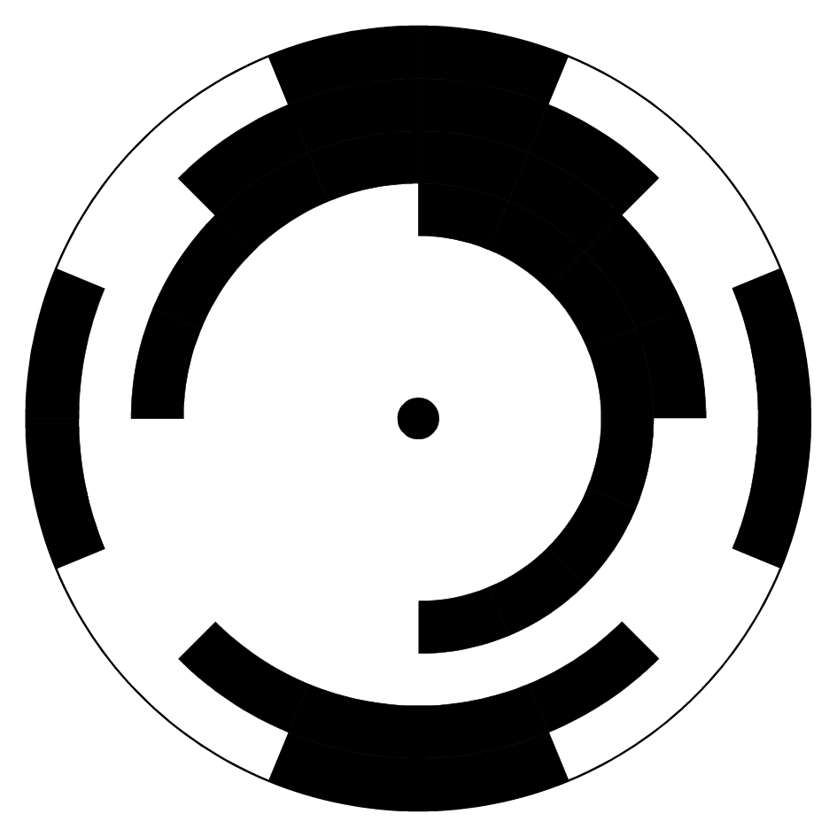

11. Codi gris¶
El codi gris, també anomenat codi binari reflectit, és un sistema de numeració binària que destaca perquè dos números consecutius difereixen en un sol dígit. Aquesta propietat li dóna avantatges a l’hora d’evitar canvis falsos en les aplicacions electromecàniques o de correcció d’errors.
Aplicacions de codi gris¶
- Codificador absolut
El codificador són dispositius que detecten el torn que ha fet un eix. Per detectar el torn, s’utilitza un disc transparent en alguns punts i opac en altres punts. Els sensors òptics són capaços de reconèixer la posició de l’eix segons el codi gris que estan llegint.
En aquesta aplicació, el codi gris s'utilitza per evitar canvis sobtats de diversos punts del disc en girar l'eix. Gràcies a la propietat del codi gris de canviar només un bit alhora, són capaços d’evitar combinacions transitòries que donin lectures falses.

Disc del codificador absolut, que utilitza codi gris per evitar lectures falses durant el torn. Les zones fosques equivalen a un zero binari i les zones clares equivalen a una binària.¶
- Maps Karnaugh
- Més endavant estudiarem la simplificació de funcions lògiques amb mapes de Karnaugh. Aquests mapes utilitzen el codi gris per representar la taula de veritat d’una funció lògica, de manera que els canvis d’un sol bit apareguin junts.
- Altres aplicacions
- Resoleu trencaclosques matemàtiques, com les torres de Hanoi.
- Codis de telegrafia.
- Conversió analògica a digital.
- Correcció d’errors en comunicacions digitals.
{kind=link}
Taules de codi gris¶
La taula de codi gris ** 1 bit ** és immediata:
Nombre Codi gris 0 0 1 1
La taula de codi gris ** 2 bits ** es forma copiant la taula anterior de manera que els bits de pes més baix siguin "reflectits " verticalment i els bits de major pes (a l'esquerra) seran el número 0 de la primera meitat superior de la taula i el número 1 de la meitat inferior de la taula:
Nombre Codi gris 0 0 0 1 0 1 2 1 1 3 1 0
Per formar la taula, per tant, reflectim els valors binaris verticalment i afegim 0 i 1 a continuació
0 0
0 1
--- // Reflejo vertical
1 1
1 0
La taula de codi gris ** 3 bits ** es forma de la mateixa manera, a partir de la taula de 2 bits "reflectida " verticalment i afegint 0 en la mica de pes més gran que la meitat superior i afegint 1 a la mica de pes més gran de la meitat inferior:
Nombre Codi gris 0 0 0 0 1 0 0 1 2 0 1 1 3 0 1 0 4 1 1 0 5 1 1 1 6 1 0 1 7 1 0 0
Per formar la taula, per tant, reflectim verticalment els valors binaris de la taula de 2 bits i afegim 0 amunt i 1 a continuació
0 0 0
0 0 1
0 1 1
0 1 0
------ // Reflejo vertical
1 1 0
1 1 1
1 0 1
1 0 0
Taula de codi gris ** 4 bits **:
Nombre Codi gris 0 0 0 0 1 0 0 1 2 0 0 1 1 3 0 0 1 0 4 0 1 1 0 5 0 1 1 1 6 0 1 0 1 7 0 1 0 0 8 1 1 0 0 9 1 1 0 1 10 1 1 1 11 1 1 1 0 12 1 0 1 0 13 1 0 1 1 14 1 0 0 1 15 1 0 0
Exercicis¶
- Quin és el codi gris?
- Quines aplicacions té el codi gris?
- Dibuixa l'àlbum d'un codificador absolut amb codi gris de 3 bits.
- Per què s’utilitza el codi gris i no un codi binari estàndard als discos del codificador absolut?
- Dibuixa una taula de codi gris de 4 bits (de 0 a 16), al costat del codi binari estàndard.
- Dibuixa una taula de codi de 5 bits grises (de 0 a 31).